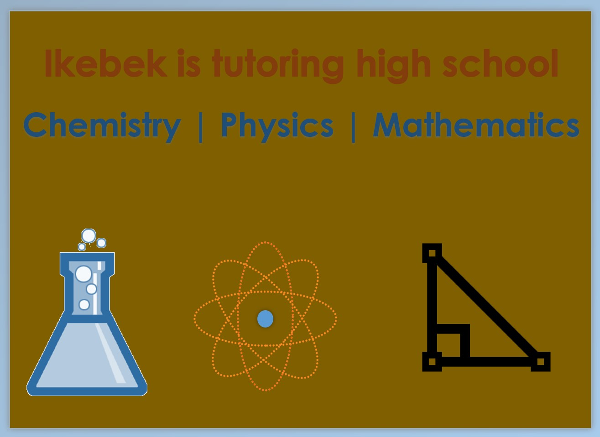

At mwalimuthesupertutor.com, tutoring services are exclusively online. In the current times, everyone is living an extremely busy life.
With the advent of the internet, online tutoring provides the flexibility that both tutors and students/parents need to accommodate other important things happening around them.
Online tutoring is beneficial for the following reasons:
The basis is to help students think about the relevance of a particular topic/or concept and do applicable examples that deepen the understanding of the subject better. More time is dedicated to clarification and explanation of relevant vocabulary and key points necessary to solve a given exercise.
Normally, the student’s textbook, lecture notes, past tests, and previous examples are reviewed in order to provide them with the opportunity to participate in the discussion. In combination with my expertise, the technique provides the student with the opportunity to find and use the resources available at their disposal.
Moreover, encouraging students to understand why an answer is correct and how to apply the same knowledge to other similar problems has been part of my tutoring methodology. Lastly, the best advice is to practice, practice and practice as much as possible!!!
Although my tutoring is mainly based on the province of Ontario curriculum, any interested students across other Canadian provinces and anywhere in the world are welcome to book their first free consultation.
Here is a list of the main topics covered in Grade 11 Mathematics, Chemistry, and Physics:
Here is a list of the main topics covered in Grade 12 Mathematics courses: